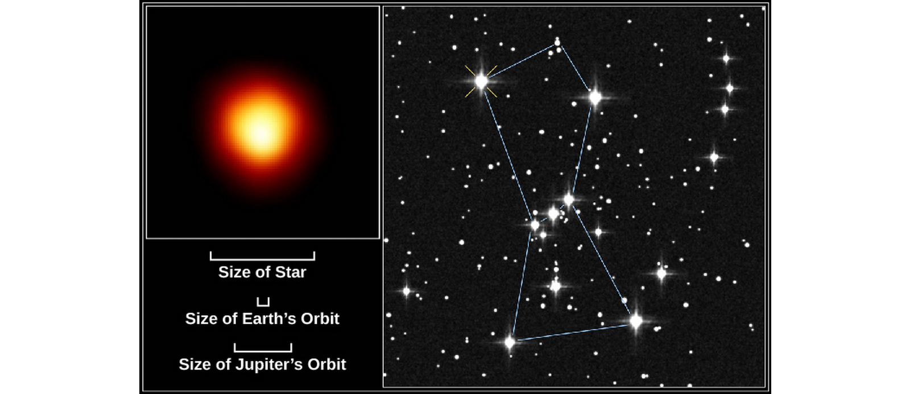
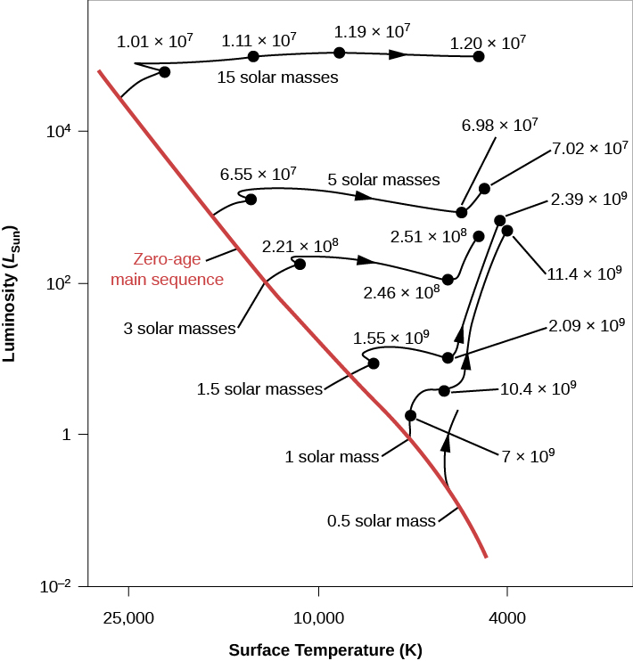
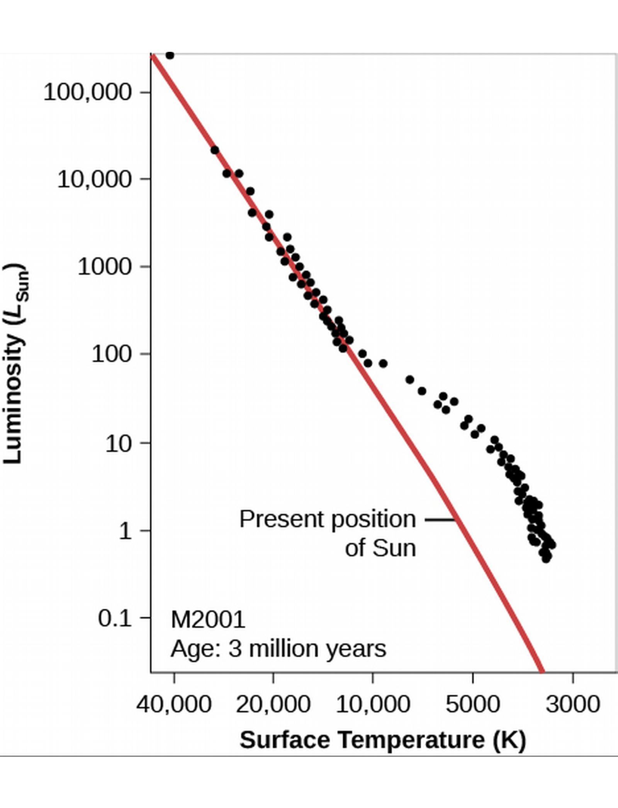
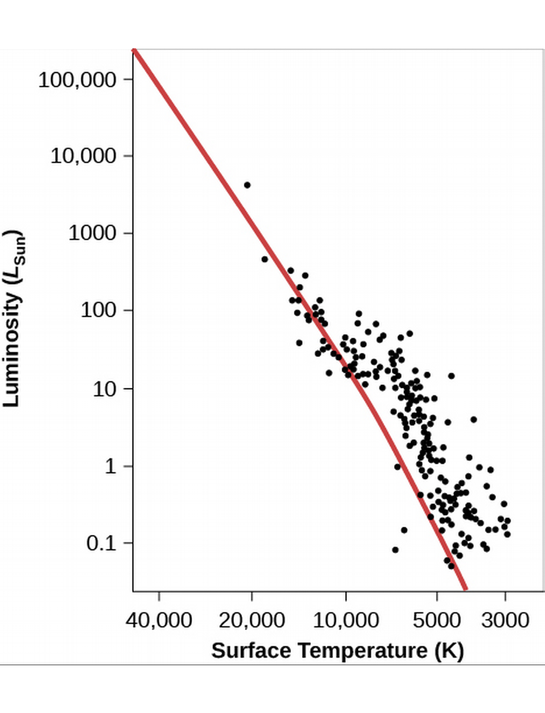

ASTR101 Ch 17-18
Ch 22 - Stars from Adolescence to Old Age
Evolution from the Main Sequence to Red Giants
- We've traced stellar evolution up to the main sequence.
- The main sequence is where the star sustains itself through fusion.
- It's referred to as the prolonged adolescence or adulthood stage of the star's life cycle.
- Left edge of main sequence below is referred to as the zero-age main sequence, where stars first fuse hydrogen and settle in to the main sequence.

- While on main sequence, mass doesn't change much (only .7% of mass is converted to energy in fusion) but chemical composition goes from mostly Hydrogen to more and more Helium.
- This change in composition changes the star's temperature, luminosity, size, and interior structure.
- This moves it along the H-R diagram! How?
- As H converts to He through the nuclear pp-chain, the inner density increases, increasing temperature, giving protons more speed on average, resulting in more collisions, and a much higher rate of fusion.
- The rate of fusion of the pp-cycle increases with temperature as
\[\mbox{Rate of pp-fusion}\propto{}T^4.\]
- So temperature increases, and luminosity will increase due to the increased rate of fusion (which produces increased rate of energy).
- This means up and to the left on the H-R diagram, but these changes are relatively small and most stars remains on the main sequence for most of their lives.
Lifetimes on the Main Sequence
- How long a star stays on the main sequence depends on how much fuel it starts with and how quickly it uses it up.
- More massive stars use up fuel more quickly since they need greater inner temperatures to balance out the much higher pressures of outer layers, and the rate of fusion goes as T4.
- On average, 90% of a star's life is spent on the main sequence. This time depends on its mass.
- Turns out a mass of .4 gives the star around 200 billion years on the main sequence, while a mass of 40 solar masses is a mere million years (Table 22.1).
From Main-Sequence to Red Giant
- Eventually, hydrogen in the core is depleted with helium in its place (and whatever heavier elements it had to start with).
- The temperature for helium fusion is much higher, so that doesn't happen in these stars.
- The star begins to shrink, and its brightness and heat comes from the conversion of gravitational into heat energy (as Kelvin and Helmholtz posited).
- This process heats up the hydrogen that was just outside the core the whole time enough for it to undergo fusion, which in turns heats up layers outside of it, causing them to expand.
- Meanwhile the helium core keeps contracting, giving out more heat, causing more fusion.
- Most star burns brighter than it ever did in this stage, since the fusion is not confined to the core.
- The increased heat causes the outer layers to expand, and the star's size increases ridiculously.
- This increase in size results in a decrease in temperature. So our star is now cooler (to the right H-R) but also more luminous (up on H-R).
- As stars evolve, they become more red.
- This stage represents the star's old age.
- Remember that more massive stars go through every stage much faster.
- E.g., Betelgeuse is 10 million years old but is already a red supergiant (compared to the red star that is the 4.5 billion year-old Sun), because it's 16 times more massive.

Models for Evolution to the Giant Stage
- We discussed two evolutions; one is the adolescent formation of stars to the zero-age main sequence (ZAMS) of Ch. 21, one is the old-age evolution of stars out of the main ZAMS that we've just discussed.
- Both plots depend on mass.
- Remember, they represent different parts of a star's life cycle.

Figure 3: Young star evolution to ZAMS.

Figure 4: Old star evolution from ZAMS.
Star Clusters
- These time scales span millions and billions of years, so we can't directly observe a star's life cycles.
- We can turn to star clusters, wherein the stars were born at approximately the same time, of the same material, in the same conditions, but have different masses (therefore evolve at different rates).
- This is like looking at a snapshot at various times of a star's life, all at once.
Star Clusters
- There are three types of star clusters: globular clusters, open clusters, and stellar associations.
- Stellar associations contain the youngest stars, followed by open clusters, followed by globular clusters, on average.
Globular Clusters
- Globular clusters are most scarce in the Milky Way, there are only 150 of them.
- They hang out at the halo and central bulge of the Galaxy.
- Live billions of years.
- Very dense in stars
- Contain only very old stars.
Open Clusters
- Open Clusters number in the thousands in the Galaxy.
- Very small, at diameters less than 30 Ly.
- Hang out in the disk and spiral arms.
- Average lifespan of a few hundred million years.
- Not very dense (hence, "open").
- Fast stars often leave the clusters.
Stellar Associations
- Associations also number in the thousands.
- Hang out in the spiral arms.
- Lifespans up to tens of millions of years.
- Association stars are extremely young.
Checking out the Theory
H-R Diagrams of Young Clusters

Figure 5: Young, 3 million year-old cluster (computational).

Figure 6: NGC2264, Christmas Tree Cluster — young, dusty.

Figure 7: NGC 2264 H-R Diagram—good agreement!

Figure 8: Cluster M41 is about 100 million years old (older, more orange stars).
H-R Diagrams of Older Clusters
- In older clusters, the stars a few times more massive than the Sun and heavier have left the ZAMS.
- The point where stars being leaving the main sequence is called the main-sequence turnoff.

Figure 9: Old, 4.24-billion year-old cluster (computational).

Figure 10: Cluster 47 Tucanae, zoomed in luminosity.
- We can get the age of a cluster from its main-sequence turnoff!
- I.e., the later we wait, the more less-massive stars have time to get off the ZAMS.
- The specific rate is attained by comparing simulation to observation.

Further Evolution of Stars
Helium Fusion
- Let's focus on stars with initial low masses, about twice the solar mass (initial because the mass will change).
- When gravity shrinks the star, the core temperature can reach higher temperatures than it had in its main-sequence days.
- When it reaches 100 million K, it's hot enough for the triple-alpha process of fusion of three helium atoms into a single carbon nucleus.
- In low-mass stars, this ignites the entire core in a fusion chain reaction called a helium flash (in higher-mass stars, it's not a flash, but a slower process).
- The flash increases temperature, heating and increasing nuclear fusion reactions, causing a runaway generation fo energy!